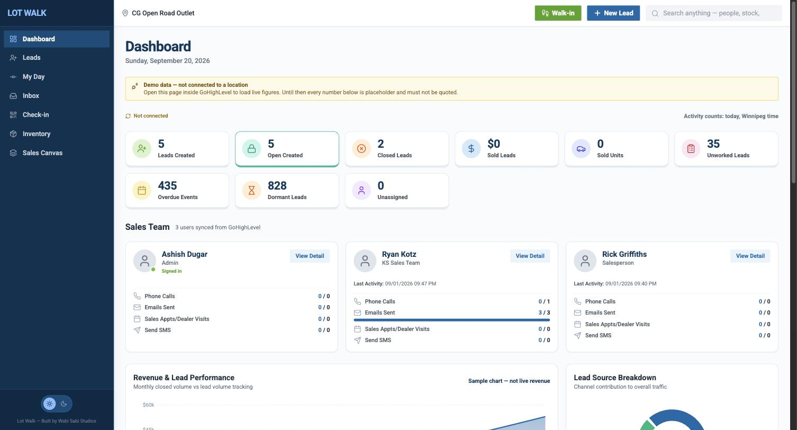

Twelve sources. One tired inbox.
AutoTrader, Kijiji, Facebook, Kenect, the website — landing in different places. The unassigned pile is a graveyard.
A buyer inquires on AutoTrader and waits. Your rep doesn’t know the lead exists. We rebuilt a Winnipeg CFMOTO floor in 14 days so that never happens — here’s the same system for yours.
AutoTrader, Kijiji, Facebook, Kenect, the website — landing in different places. The unassigned pile is a graveyard.
Round-robin is a rumour. A rep starts the morning on last night’s texts, not a list sorted by what goes cold today.
Customer asks about a snowmobile. The rep walks the lot, or guesses. Sold units still show as available.
Two vendors quoted six months to leave it. Five years of history held hostage. The GM still asks someone to compile the board.
One screen for every lead, conversation, and follow-up. Managers see who’s responding. Each rep opens the morning on their own list, sorted by urgency.
Every inquiry lands in the right pipeline — ATV to ATV, RV to RV — and gets assigned to the next rep. No typing, no unclaimed pile.
Units that fit, inside the lead. Sold stock retires itself overnight. No second tab.
Thread summary and a drafted reply. The rep reads, edits, sends. The AI never messages a buyer on its own.
Speed-to-lead, sold by source, unassigned aging. The board a GM opens without asking anyone to compile it.

Parsed into the right pipeline. Assigned to the next rep. No one types a name.
Lot Walk sorts by what goes cold. The rep sees units that fit, inside the thread.
AI suggests. The rep edits. The buyer gets a human — on time.
Speed-to-lead, source, aging. No one compiled a spreadsheet.
Overnight sync. The next buyer never sees a ghost on the lot.
A CFMOTO dealership stuck on a legacy CRM — ATVs, snowmobiles, boats, RVs, motorcycles — twelve lead sources, five years of history at risk. We moved everything and replaced the old system.
Every lead, every thread — on your servers. Not in ours.
We build inside your GHL. Canada Central when that’s the requirement. If we leave, the pipeline stays.
A 30-minute call. Walk us through how a Kijiji lead reaches a rep. We’ll tell you what we’d cut first.
Book the 30-minute call →NO SIX-MONTH MIGRATION THEATRE.